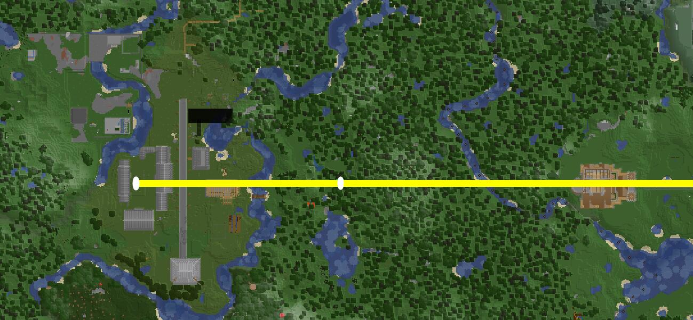
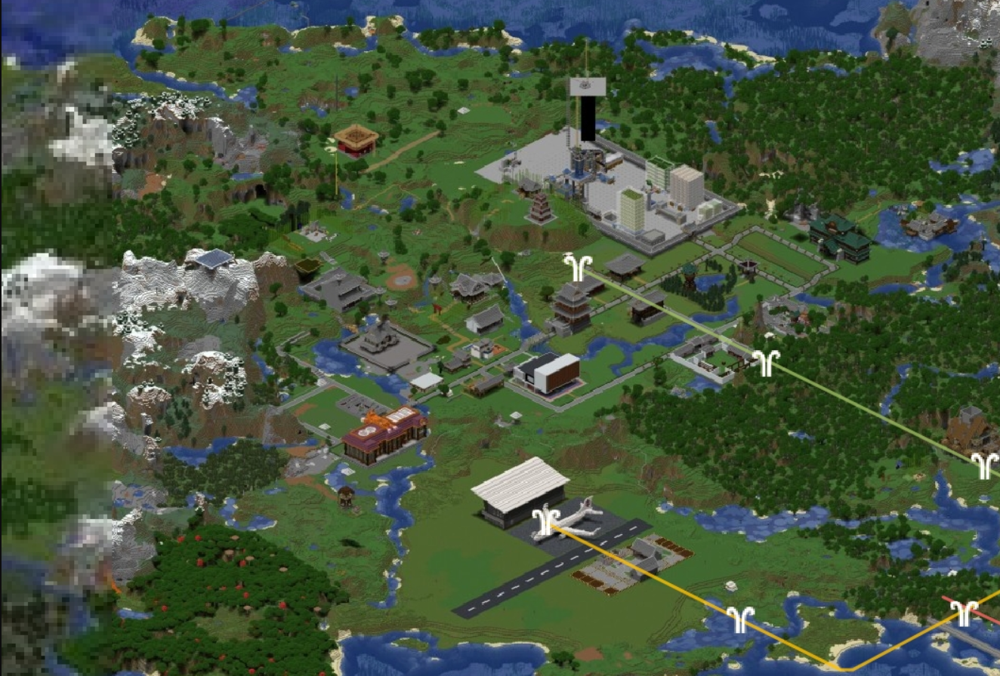
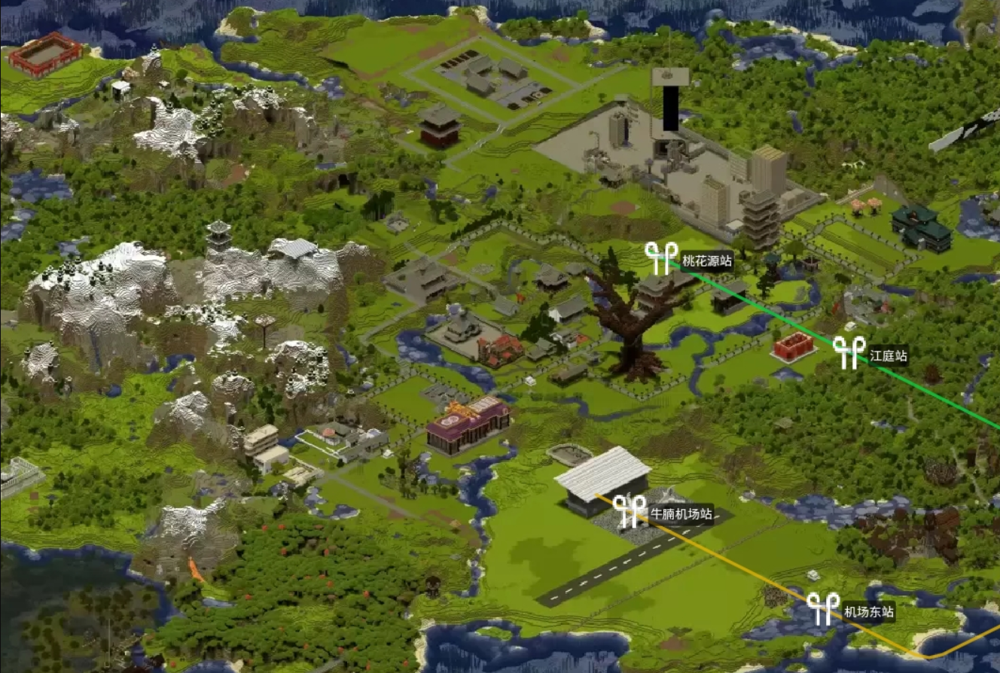
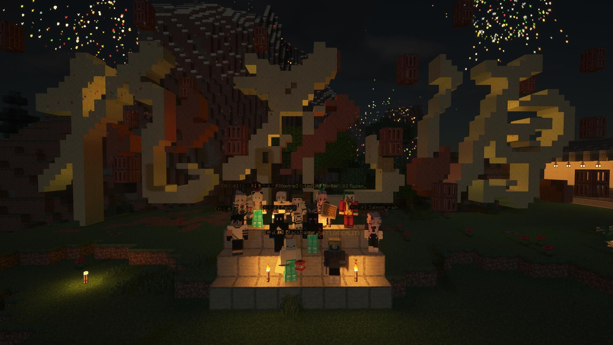
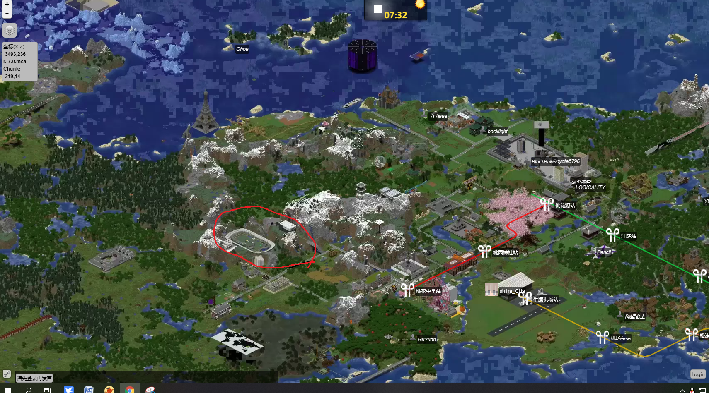

小镇介绍
成员介绍
backlight：桃花源镇长兼建筑部部长兼后勤部部长
Blackbaker：副镇长
LOGICALITY:工业部部长
桃花源位于主城以西的中式风格小镇，是距离主城最近的小镇，乘坐牛腩地铁4号线（绿线）选择桃花源站即可到达。
镇内设施完善，能完全满足玩家的基本需求。每个玩家都可以自由的选择自己在这座小镇的生活方式，
如果你想干出一番大事业，你可以放开你的手脚大胆去干。如果你只想偏安一隅，也可以找一块风水宝地，
给自己修一个小而温馨的院子,享受内心的宁静。
小镇有温馨的氛围，镇里会不定期举办一次活动，比如赛马和PVP，保证你玩的开心！
如果你想加入桃花源这个大家庭，请加入QQ群：1129324923，我们会友善的对待每一个新人！
《桃花源律》
《桃花源律》
声明：《桃花源律》是以《牛腩法典》为基础的城镇法典，仅是对《牛腩法典》的补充，镇员应同时遵守《牛腩法典》和《桃花源律》。
行政：
第一条 桃花源的大小事务由镇长和管理组成员共同管理，重大决策须经镇长或管理组协商后再行动，禁止先斩后奏。如有违反，第一次警告，情节严重者撤销管理员身份或桃花源镇员身份。
第二条 当镇长不在线时，由副镇长代行镇长的职权。
第三条 桃花源设工业部、建筑部和后勤部。工业部负责建造和维护红石机器，建筑部负责桃花源境内建筑和基础设施的建设，后勤部负责工业区仓库补货和参与大型工程。三个部应分工明确，团结一致。
第四条 镇员可对镇内重大决策进行投票表明自己的意见，也可发表自己对于桃花源发展的建设性意见，好的意见经管理层或镇长认可后即可采纳。
第五条 针对加入桃花源QQ群长期未到镇内报到的玩家，管理组有权将此类玩家从桃花源内剔除。
建筑：
第六条 桃花源是中式风格小镇 ，小镇鼓励镇员修建中式建筑（不建中式的也没关系）
第七条 如无建设大型建筑的需要，禁止大规模平整地形，杜绝平而不用，造成严重土地资源浪费的行为。如有违反，处5000N罚金并参与地形修复工作。
第八条 原则上只要是空地都可以修建建筑（已有规划的除外），建筑不能是过于离谱和阴间的风格，否则会被强制拆除（这点和服务器的要求是一致的）
第九条 超过14天没有增加任何进度的建筑将被定为烂尾楼，当烂尾楼阻碍其他工程时，管理组人员有权力拆除该建筑。
第十条 当一处未完工的建筑短期内无人施工，而另一处建筑缺少建筑材料时，玩家可以申请从无人施工处拿取一定数量的建筑材料，避免公共资源的浪费。
第十一条 城镇道路的修建应与镇长进行协商，不要私自修建跨越地域广的道路（家门口的路不算）
工业：
第十二条 桃花源公民可以根据自身的需要适量的拿取仓库物资（小镇顾问不具备桃花源公民的身份），但未经允许禁止拿取大量仓库物资（修建大型工程除外）。尊重每一位默默付出的后勤玩家的努力。
第十三条 镇员有运营仓库的义务，放置物品自觉按照分类来放，多余的产物小镇鼓励镇员把它们放到公共仓库。
第十四条 桃花源公民要合理合规的使用红石机器，如果因玩家自身原因导致机器被破坏，罚款2000N并参与机器的修复工作。情节严重者开除桃花源镇籍并交由牛腩法庭审判
第十五条 桃花源不承认多重镇籍，严禁镇员拿取大量仓库物资去建设其他小镇，违者开除镇籍。
第十六条 凡是《桃花源律》没有提到的部分，参考《牛腩法典》
桃花源简史
2020.5.18 桃花源成立
桃花源最早是主城以西的一块大平原，距离主城较近，地形也平坦，十分适合建设小镇。Lycastem(原隔壁老王）先发现了这块风水宝地并且打算建立城镇，而此时在凯夏镇的backlight决定自立门户，带着全部财产寻找新的地盘开疆拓土，途中发现了这块大平原，并给他命名为桃花源。之后又遇到了同样前来开疆拓土的xiong_kai，至此backlight、xiong_kai、Lycastem(原隔壁老王）正式开始建设桃花源。
在桃花源建镇初期，由于缺乏经验，建设的速度很慢。全镇一共只有三座房子

（建镇初期的样貌，这个状态持续了很久，因为人手不足，没什么大变化）
2020暑假：高速发展期
新人blackbaker、charon和longzai的到来为小镇增添了许多活力，工业区得到大规模修整，大量新机器被建设出来，一座座新建筑拔地而起。桃花源不再是那个默默无闻的只有三座破房子的小镇，建筑的布局也日益合理化。北部为城区，只能建设中式或日式房屋，南部为住宅区，可以修建各式各样的建筑，从下图中我们可以看出。

（经历过高速发展期之后的桃花源）
2020 9-12月份：稳健发展期
进入了开学季，镇员们能游玩的时间大大缩短，但他们仍然热情高涨的建设着这个小镇，每周坚持上线为小镇增添新的生机，black baker的桃花树工程开工（然而这个工程最终因为工作量太大做到一半咕咕咕了），日后桃花树将成为桃花源的地标性建筑之一。

2021寒假：第二轮高速发展期
迎来寒假，桃花源又进入了高速发展期，blackbaker继续完成桃花树的树叶部分，又有许多建筑拔地而起，同时桃花源的疆域进一步拓展。小镇还在一月份举办了一次PVP活动，红队碾压了绿队，比赛现场十分欢乐。此外，小镇还举行了桃花源大合照，几乎所有镇员都上线参加了这次合照。下图为照片：

2021 2月-8月：第二轮稳健发展期
迎来开学季后许多老镇员上线次数骤降，桃花源的发展逐渐停滞，为应对这种状况，管理组放宽了对城镇的管理，（例如取消了城区和住宅区的限制）。在此期间，繁华落尽和瓦个领爸修建了桃花源赛马场，赛道规划合理，趣味性十足。

（图中红圈为赛马场位置）